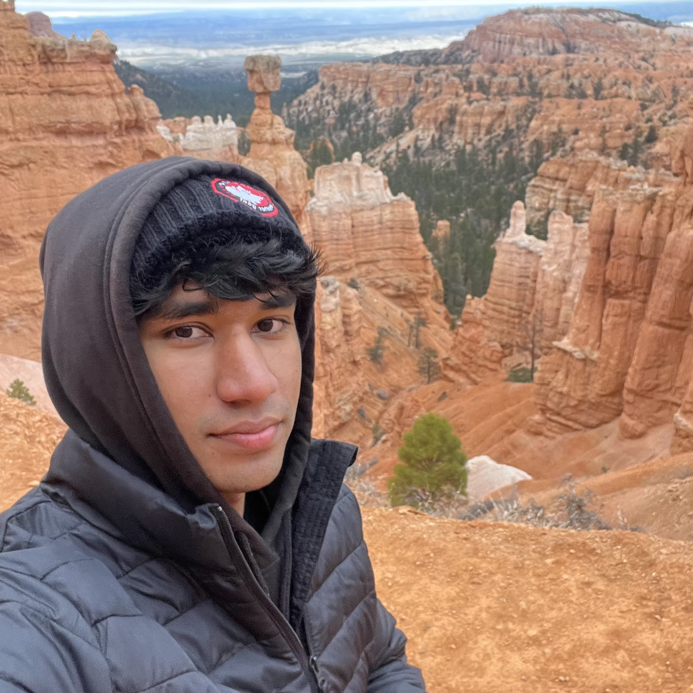

Sky Computing Lab, UC Berkeley
Researcher · Berkeley, CA
Research on multi-agent systems and automated research for inference engineering, mentored by PhD researcher Mert Cemri under Prof. Ion Stoica.

i like to engineer things. currently working on inference, multi-agent systems, and understanding frontier models.
i'm drawn to moments where intelligence — artificial or otherwise — does something genuinely surprising. the past few years have felt like one long such moment. i want to be part of shaping where it goes.
I'm Umar. I think one of the most important things to work on right now is deploying and understanding models, and figuring out how to make them run more efficiently at scale. I got my start in engineering at 15, when I found a vulnerability in my school's CMS and fixed it. Right now I'm working on multi-agent systems and automated research for inference engineering at Berkeley's Sky Computing Lab.
Outside of research and engineering, I watch a lot of movies, follow sports, and chase as much of life as possible. My philosophy is simple: optimize for breadth. The more of the world you experience — people, places, ideas — the richer everything becomes. The best people I've met are curious about everything.
Research on multi-agent systems and automated research for inference engineering, mentored by PhD researcher Mert Cemri under Prof. Ion Stoica.
Worked on inference workloads for on-device AI on the Hexagon NPU, as well as 5G NR/LTE modem software test case development.
Built Vision Transformer and ConvLSTM models for early solar active region detection using magnetograms and Dopplergrams, trained on NASA HPC resources.
A venture we started in high school to find and trade arbitrage opportunities across Kalshi, Polymarket, and other prediction markets. Built a Java API for Kalshi and a low-latency, HFT-style pipeline on a ZeroMQ message bus to detect and execute trades fast. Made over $3,000 in profit.
10x hackathon winner (I've won 10 hackathons and participated in a lot more). Here are some highlights:
Some good stuff I've read and recommend everyone read: